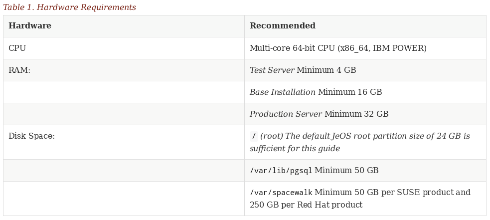

Example: Docbook/XML (fraction)
<table xml:id="tab.wbem.setting.daemon.1" frame="topbot" rowsep="0">
<title>Commands for Managing sfcbd</title>
<tgroup cols="2">
<colspec colnum="1" colname="1"/>
<colspec colnum="2" colname="2"/>
<thead>
<row rowsep="1">
<entry colname="1">
<para>
Task
</para>
</entry>
<entry colname="2">
<para>
Linux Command
</para>
</entry>
</row>
</thead>
...Modernizing the SUMA Doc Process
Greetings and Introduction
SUSE Manager Doc Process
Joseph Cayouette
jcayouette@suse.de
19.06.2018
Goals
Enable simple contribution (New format Asciidoc)
Treat AsciiDoc like code (branch, fix, pull request, review, merge)
Automation (Review, Merge, build, and publish via travisci)
Building a community around SUSE Manager and Uyuni
XML vs. Asciidoc Part I
XML vs. Asciidoc Part II
Example: AsciiDoc (complete)
[cols="1,1", options="header"]
.Hardware Requirements
|===
| Hardware | Recommended
| CPU: | Multi-core 64-bit CPU (x86_64, IBM POWER)
| RAM: | Test Server Minimum 4 GB
| | Base Installation Minimum 16 GB
| | Production Server Minimum 32 GB
| Disk Space: | [path]``/`` (root) 24 GB
| | [path]``/var/lib/pgsql`` Minimum 50 GB
| | [path]``/var/spacewalk`` Minimum 50 GB per SUSE product and 250 GB per Red Hat product
|===XML vs. Asciidoc Part III

Build Process Part I
Docs are written and contributed by community in Asciidoc format
The Asciidoctor Ruby gem provides the conversion to Docbook 5 XML
The SUSE Docbook Authoring and Publishing Suite(DAPS) enables export of various formats (PDF, EPUB, HTML Single and chunked)
Build Process Part II
We use a Makefile to bind these tools together and produce our output formats